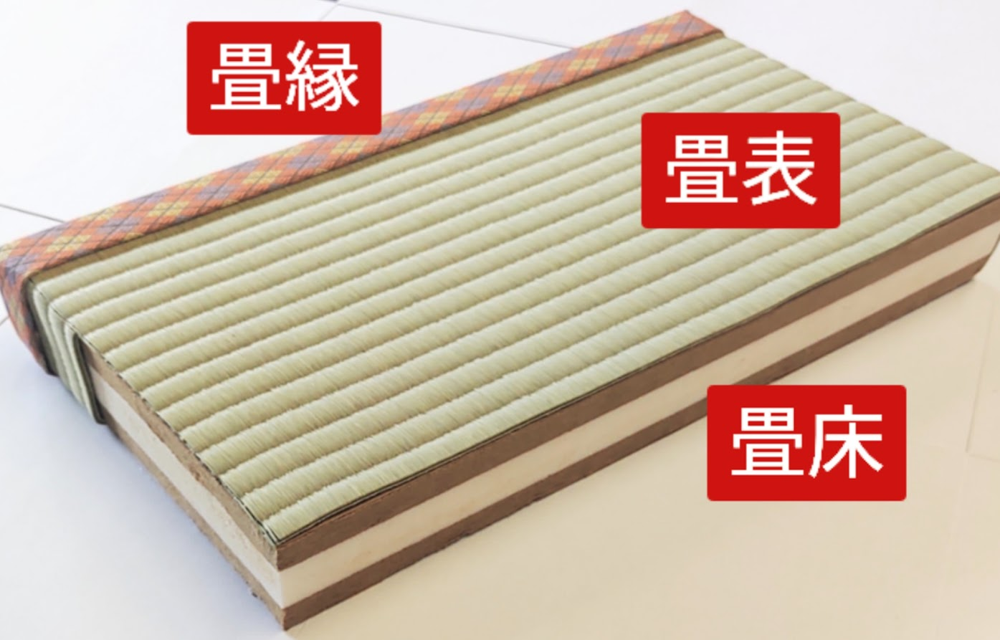
※畳の各材料の名称
※畳表（たたみおもて）とは、イグサの茎で 織ったござ。畳の表面に付けます。
※畳縁（たたみべり）とは、一般的に畳の長 手方向に付けられる布のことです。
※畳床（たたみどこ）とは、畳の芯となる部 分のことです。
※畳床は既存のものを使用し畳表と畳縁を新しくすることです。
☆目安：裏返し後5年程度経過し、畳表の毛羽が衣服に付くようになった頃。
※畳表だけでなく畳の本体である畳床ごと新しくすることです。
☆目安：20年程経過し、歩くと極端に沈んだりぐにゃぐにゃと柔らかすぎる時。
※既存の畳表と畳縁を畳床からはがし、畳表の裏面を
張り直すことです。畳床は既存のまま使用します。
☆目安：表替え後３〜５年頃。年数が経ちすぎるとシミが
目立つため早めがおすすめ。
← 価格表は横にスクロールできます →
| 等級 | 商品名 | い草の産地 | 満足度・快適さ | 価格/1畳 | 特徴・仕様 | おすすめポイント お客様のメリット |
|---|---|---|---|---|---|---|
| 超特選 | 星美表 （きらめき） 至高の一枚 |
熊本県 |
★★★★★
★★★★★
|
57,000円 62,700円(税込) |
国産超最高級品 世界一の畳表です。 ・使用経糸(たていと)→ 麻麻（麻糸を2本使用） ・い草の本数→約8000本 ・い草の長さ→約140ｃｍ |
|
| 特選 | 星美表 （かがやき） ちょっと贅沢 |
熊本県 |
★★★★★
★★★★★
|
30,000円 33,000円(税込) |
国産最高級品 職人が認めた、確かな輝きを持つ畳表です。 ・使用経糸(たていと)→ 麻麻（麻糸を2本使用） ・い草の本数→約8000本 ・い草の長さ→約140ｃｍ |
|
| 特上 | 星美表 （いろどり） 人気No.1 |
熊本県 |
★★★★
★★★
|
14,000円 15,400円(税込) |
国産高級品 当店人気Ｎｏ１の畳表です。 ・使用経糸(たていと)→ 麻綿（麻糸と綿糸の2本を使用） ・い草の本数→約7000本 ・い草の長さ→約130ｃｍ |
|
| 上級 | 星美表 （ひかり） 人気No.2 |
熊本県 |
★★★★★
|
10,000円 11,000円(税込) |
国産上級品 当店人気Ｎｏ２の畳表です。 ・使用経糸(たていと)→ 綿綿（綿糸を2本使用） ・い草の本数→約5000本 ・い草の長さ→約110ｃｍ |
|
← 価格表は横にスクロールできます →
| 等級 | 商品名 | い草の産地 | 満足度・快適さ | 価格/1畳 | 特徴・仕様 | おすすめポイント お客様のメリット |
|---|---|---|---|---|---|---|
| 特級 | 春 店主おすすめ |
四川省 |
★★★★★★
|
10,000円 11,000円(税込) |
中国産高級品 中国産人気Ｎｏ１畳表です。 ・使用経糸(たていと)→ 麻綿（麻糸と綿糸の2本を使用） |
|
| 上級 | 夏 丈夫で長持ち |
四川省 |
★★★★
|
8,000円 8,800円(税込) |
中国産上級品 ・使用経糸(たていと)→ 麻シングル（麻糸を１本使用） |
|
| 並品 | 秋 | 四川省 |
★★★
|
6,000円 6,600円(税込) |
中国産並品 ・使用経糸(たていと)→ 綿（綿糸を１本使用） |
|
← 価格表は横にスクロールできます →
| 畳床の種類 | 価格/1畳 | 特徴・仕様 | おすすめポイント・お客様のメリット |
|---|---|---|---|
| 建材床（国産） （けんざいどこ） |
8,000円 8,800円(税込) |
・畳ボードと発砲樹脂系の素材「ポリスチレンフォーム」を重ねた新建材 ・断熱性、衝撃性、遮音性に優れ、現在流通している畳床の約8割を占めています。 |
・ダニやその他害虫が気になっている方におすすめです。 ・100%ダニなどがいなくなる事は不可能ですが快適に普段の生活が出来る畳床です。 ・湿気にも強いのでカビの発生も防げます。 ・ボードを使用しているので、仕上がりも平らで見た目もとても綺麗に仕上がります。 |
| 藁床（国産） （わらどこ） |
12,000円 13,200円(税込) |
・昔ながらの天然素材。わらを何層にも積み重ねて圧縮してつくるため、耐久性・調湿性・断熱性・保湿性に優れています。 ・とりわけ調湿性に優れ、足で踏むとふわっとしたソフト感があります。また吸音・防音効果も備えております。 ・張替えを繰り返しても寿命が長いのが特徴です。 |
・適度な柔らかさがあり、ある程度のクッション性を求める方におすすめです。 ・大量の水をこぼして腐らせてしまったり特別なことがない限り何回も表替えが出来、家を建て直す時まで使えます。 ・吸湿放湿性に優れている為、冬は暖かく夏は涼しく過ごせることもおすすめポイントです。 |
← 価格表は横にスクロールできます →
| 商品名 | 価格/1畳 | 特徴・仕様 | おすすめポイント・お客様のメリット |
|---|---|---|---|
| 竹炭パワーシート |
3,500円 3,850円(税込) |
・竹炭の構造は多孔質になっており、高い調湿・消臭効果を発揮します。 ・活性珪酸という物質を含んでおり、抗菌抑制効果に優れています。 ・生地には通気性があり、ダニなどの虫が通りにくい不織布を使用しています。 |
☆ご使用されたお客様の声では☆ ・湿気が多く気になっていたが改善された。 ・部屋のこもる臭いなど悪臭がなくなった。などのお声いただいております。 ・抗菌抑制の効果やダニの発生を抑える事もおすすめポイントです。 ・半永久的にご使用出来るのでおすすめです。 |
| 防虫シート |
1,500円 1,650円(税込) |
・長期にわたりダニの発生を防ぎ、快適和空間を保つことの出来る防虫シートです。 |
・畳床を包み込む紙状のシートで湿気の多いお部屋や空気がこもりやすいお部屋など、ダニの発生が気になるお客様におすすめです。 ・今まで使用されたほとんどの方が問題解決されています。 |
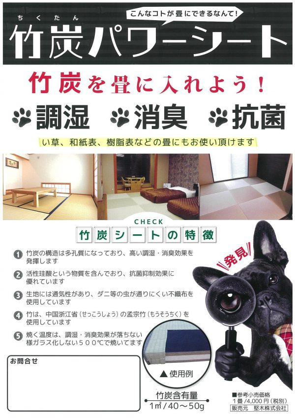
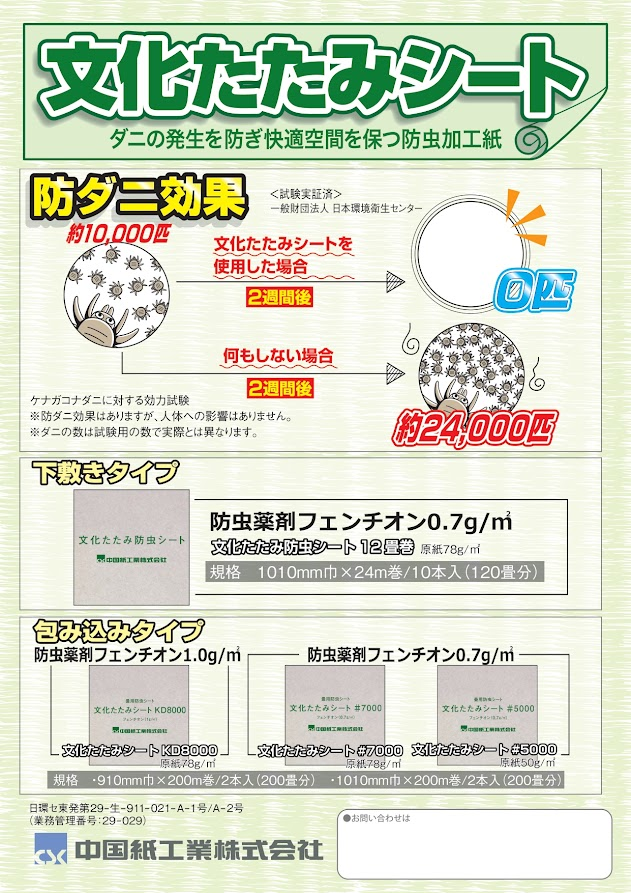
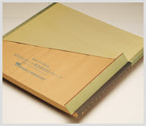
1,000円（1,100円税込）
※ 画像をクリックすると拡大できます。
ひしろく

ストリーム①

ストリーム②

大宮縁①

大宮縁②

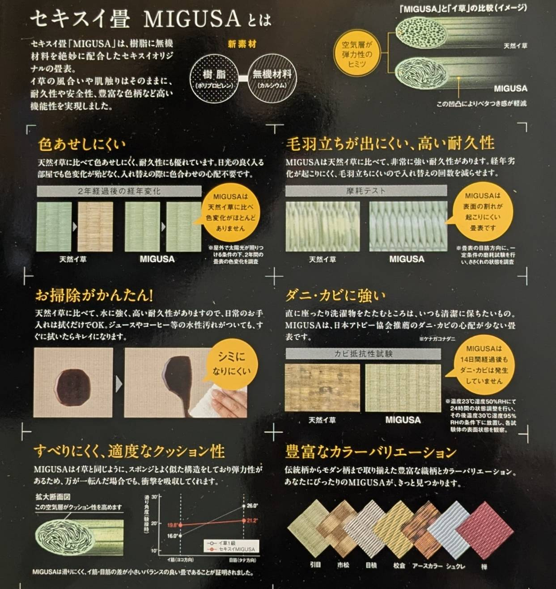
・一番の違いは、畳表に使用されている素材です！！
・ダイケンは和紙、セキスイは樹脂を加工し畳織しています。
・質感が違いますので、実際に手に取って選んでいただけたらと思います。
※ダイケン健やかおもてとセキスイ美草は、縁付きタイプと縁なしタイプに対応しています。
※ダイケンおもて・セキスイ美草とも金額は同じです。 （価格/1畳）
← 価格表は横にスクロールできます →
| 種別 | 縁なし料金 半畳サイズ |
縁なし料金 1畳サイズ |
縁付き料金 1畳サイズ |
|---|---|---|---|
| 表替え |
15,000円〜 16,500円（税込） |
22,000円〜 24,200円（税込） |
14,000円〜 15,400円（税込） |
| 新規畳 |
17,000円〜 18,700円（税込） |
30,000円〜 33,000円（税込） |
22,000円〜 24,200円（税込） |
豊富なカラーバリエーション
※ 画像をクリックすると拡大できます。
🌿 ダイケン健やかおもて


✨ セキスイ美草


人とペットにやさしい合成皮革の畳表です。抗菌・防カビ・防臭効果も期待できます。


※わんにゃんスマイル畳は、縁付きタイプと縁なしタイプに対応しています。 （価格/1畳）
← 価格表は横にスクロールできます →
| 種別 | 縁なし料金 半畳サイズ |
縁なし料金 1畳サイズ |
縁付き料金 1畳サイズ |
|---|---|---|---|
| 表替え |
19,000円〜 20,900円（税込） |
23,000円〜 25,300円（税込） |
18,000円〜 19,800円（税込） |
| 新規畳 |
26,000円〜 28,600円（税込） |
32,000円〜 35,200円（税込） |
26,000円〜 28,600円（税込） |
琉球表（りゅうきゅうおもて）は、カヤツリグサ科の植物「七島藺（しちとうい）」を原料として作られる、耐久性に優れた特殊な畳表（畳の表面）です。かつて沖縄で栽培されていたためこの名があり、現在は大分県国東地方などで主に生産されています。
現在は「琉球畳」の材料として知られますが、もともとは耐久性を活かし、柔道畳や農作業場用としても使われていた頑丈な素材です。
七島藺を使用。い草よりも断面が三角形で、繊維が太く丈夫。
表面がざらざらとしており、荒々しく素朴な風合い。
一般的なイ草の畳よりも耐久力が高く、長く使える。
縁なし半畳の「琉球畳」として利用され、市松模様のモダンな和室によく使用される。
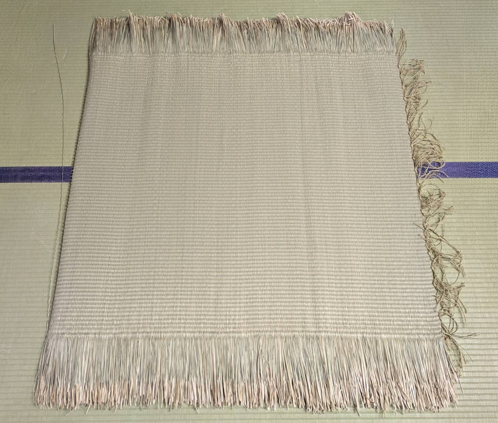
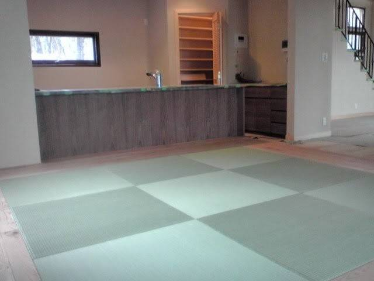
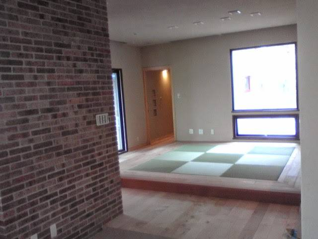
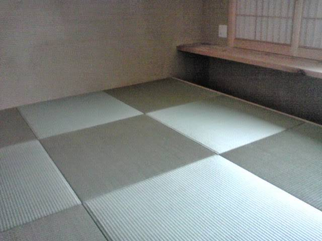
※琉球畳は、縁なしタイプに対応しています。
← 価格表は横にスクロールできます →
| 説明 | 料金 | ||
|---|---|---|---|
|
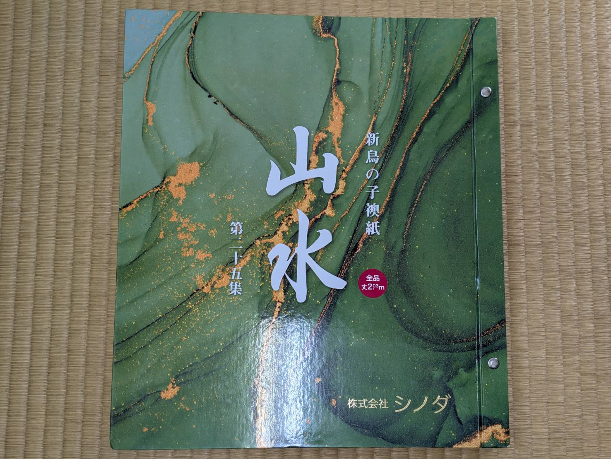 |
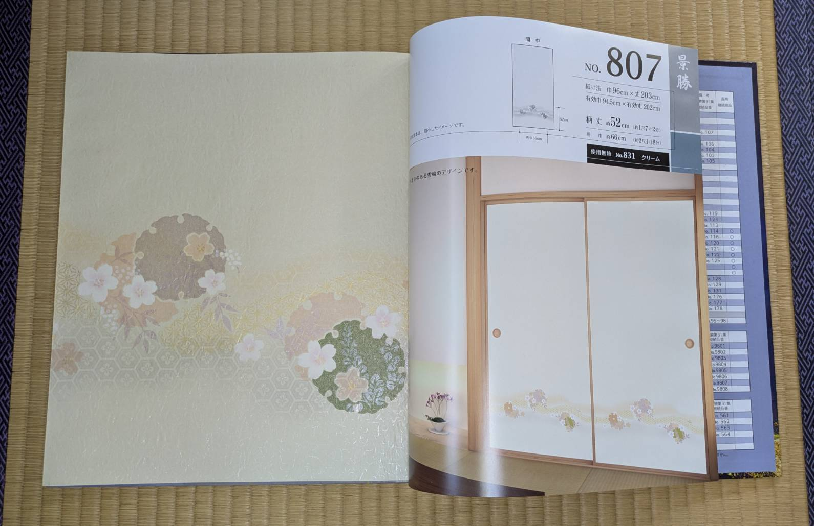 |
山水 新鳥の子 モダンな和室にもマッチしてご使用いただける銘柄も多数取扱。バリエーション豊富な定番のラインナップ。 |
1面 5,000円 5,500円(税込) |
|
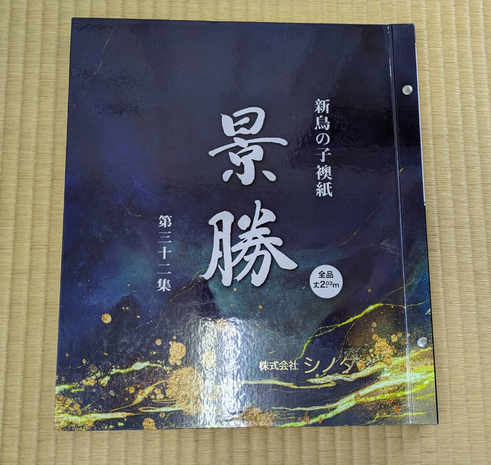 |
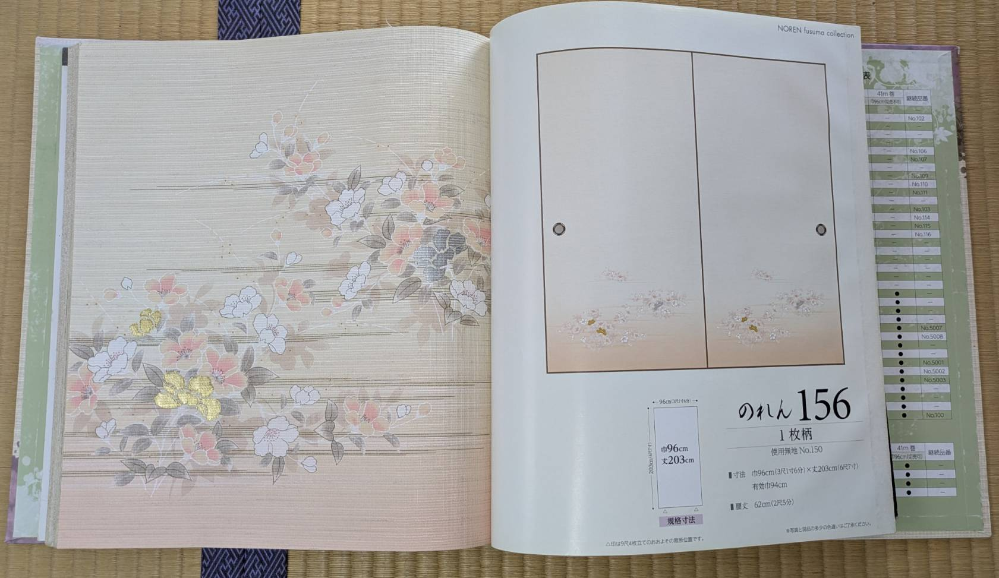 |
景勝 新鳥の子 繊細な模様と色彩が美しく、それぞれの住まいの雰囲気に合わせやすい。生活感あふれる意匠を提案。 |
1面 5,500円 6,050円(税込) |
|
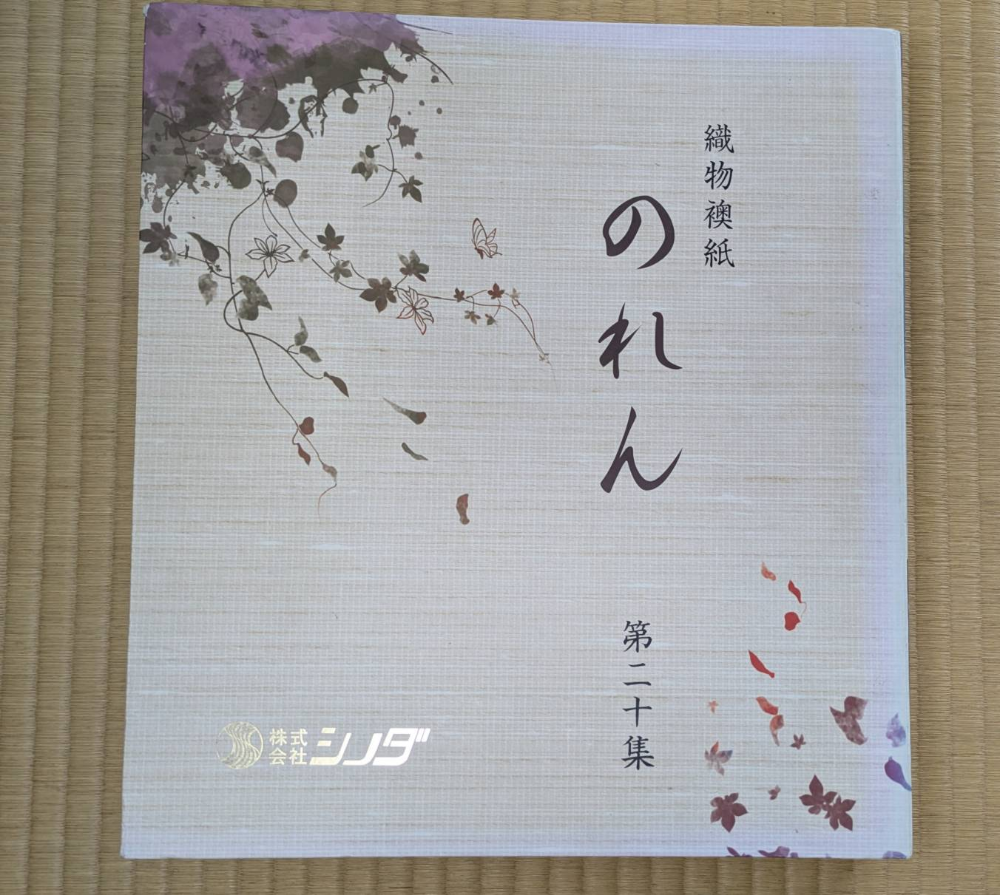 |
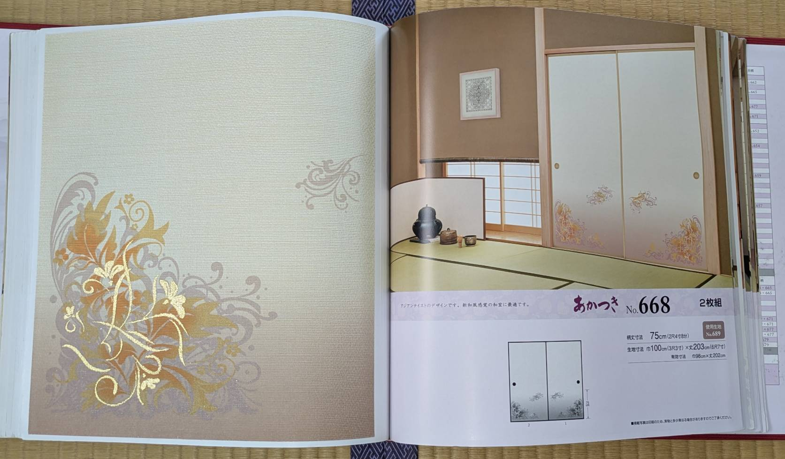 |
のれん 糸入り 本格和室の伝統的な趣を大切にしながら、あらゆる住空間に美しく映える上質な襖紙。 |
1面 6,500円 7,150円(税込) |
|
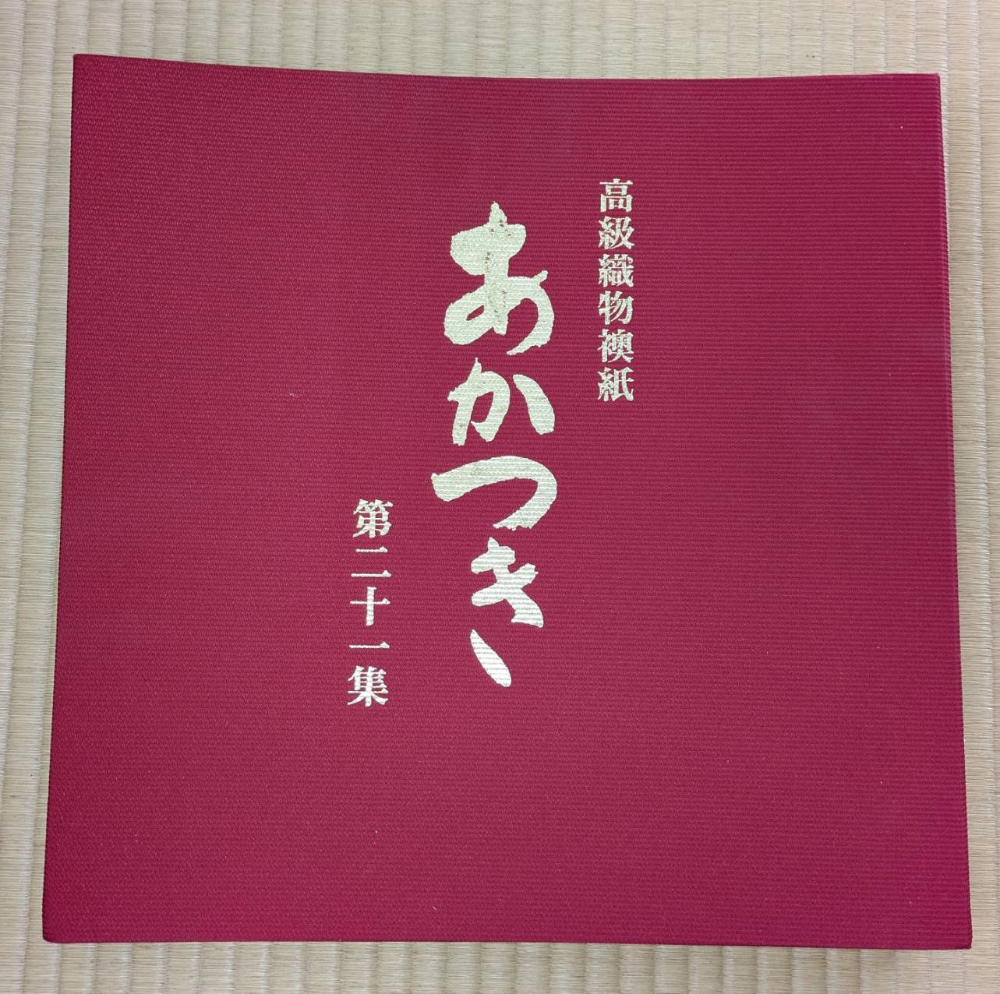 |
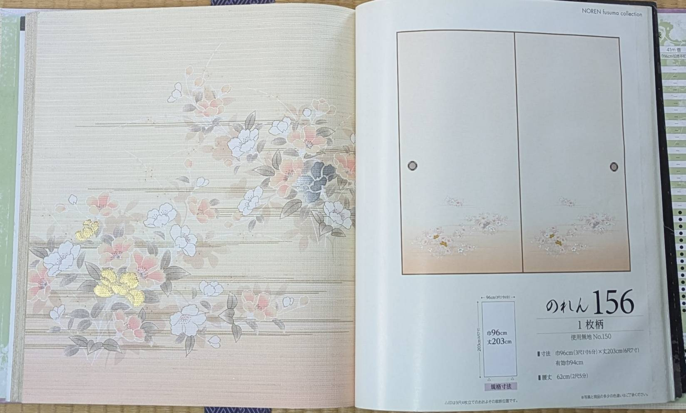 |
あかつき 高級襖紙 繊維独自の組み合わせで紙厚・風合いを巧みに活かした高品質な高級襖紙。清雅感あふれる丁寧な仕上がり。 |
1面 12,000円 13,200円(税込) |
※押入れ襖張り 1面 2,200円(税込)
※天袋、地袋 1枚の70%（山水 新鳥の子の場合5,500円の70%で3,850円）
※新規襖 33,000円(税込)〜
← 価格表は横にスクロールできます →
| 説明 | 料金 | ||
|---|---|---|---|
|
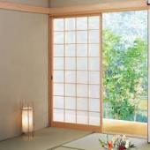 |
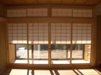 |
和紙 ※一般的な障子紙です |
1枚 4,500円 4,950円(税込) |
|
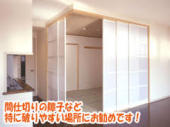 |
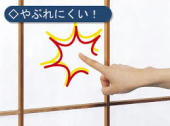 |
破れにくい障子紙 |
1枚 5,500円 6,050円(税込) |
|
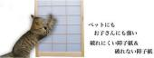 |
プラスチック障子紙 ペットがいるご家庭でも大切なものを傷つけてしまわないよう配慮した障子紙。 |
1枚 13,000円 14,300円(税込)〜 |
※大きさにより値段が変わる場合があります。
※新規障子はお問い合わせください。
※その他、模様入り、色付き障子など希望の場合はお問い合わせください。
見積もり・ご相談は無料です。
畳の見本帳をお持ちしてご自宅へお伺いします。
営業時間 8:00〜19:00（土日・祝日も対応可）